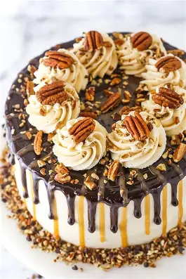

PNG Format Example
About This Image
My mother and I made this cake together for my birthday once. It was obnoxious, but I'll be condemned before I say that the efforts weren't worth it. Making the caramel sauce to mix into the frosting was hard to get right, but we made it work wonders. That paired with the spongy chocolate cake layers, topped with pecans and a chocolate and caramel drizle...this easily became one of my favorite cakes of all time. Just make sure you have some coffe and/or water on standby. That sweetness might be a bit overwhelming for some people. Also, share it with friends and family; you don't want to be packing on the pounds alone!
Why PNG Format?
I wanted to showcase the other commonly-used image format on the internet. What differentiates this from JPG is that a PNG is able to sacrifice uneccesary data without sacrificing image quality. While not as much data space will be saved, it will still look better than a JPG when zoomed in on. PNGs also support transparency, which is useful for images that you want to layer on top of other images. PNGs also support interlacing which allow for a lower-quality version of the image to load first, then gradually improve in quality as more data is downloaded.
Image source: Life, Love, and Sugar